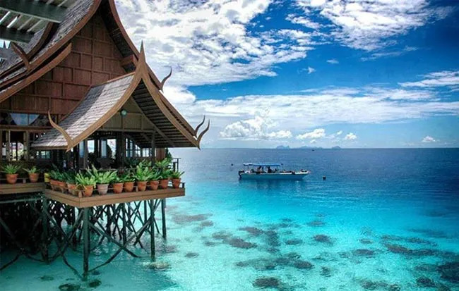

Semporna Island, Sabah

Semporna, located on the east coast of Sabah, is the main gateway to some of the world's best island resorts and diving sites. Known for its crystal clear blue waters and stunning coral reefs, this destination offers a tropical paradise on par with the Maldives, perfect for family vacations and scuba divers. Semporna is also known for the Regatta Lepa traditional boat races which occur annually in April. Semporna was also the location of the finish line of Eco-Challenge: Borneo, held in 2000. Off the coast is a marine park called Tun Sakaran Marine Park, also known as Semporna Islands Park. It was gazetted by Sabah Parks in 2004. Visitors to Semporna are mainly sunseekers looking for relaxation or watersports activities such as scuba diving or snorkelling.